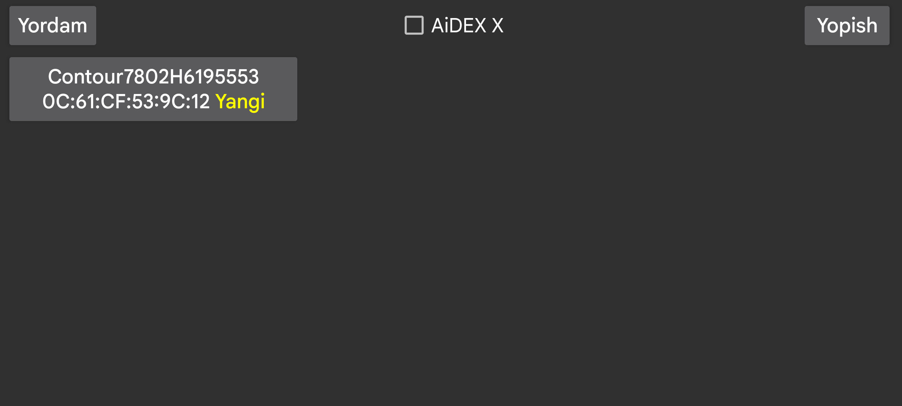

Glyukoza o'lchagich qurilmalarini qidiradi. Topilgan qurilmalar shu yerda ko'rsatiladi. Ulangan qurilmalar topilmaydi. Birinchi safar qurilmalarni juftlash rejimiga o'tkazish kerak, masalan, tugmani uzoq bosib, ko'k chiroq miltillaguncha qurilmani ishga tushirish orqali.
Qurilma ko'rsatilganda, uni bosing va qon glyukozasi o'zgaruvchisini tanlang. Agar bu o'lchagichdan olingan glyukoza o'qishlari Juggluco da allaqachon mavjud bo'lsa, takrorlarni oldini olish uchun faqat keyinroq sanadan boshlab glyukoza ma'lumotlari qo'shilishini belgilashingiz mumkin.
Bosing Saqlash ushbu glyukoza o'lchagichdan foydalanish uchun yoki Bekor qilish undan foydalanmaslik uchun.
Agar sizda Contour Next ONE glyukoza o'lchagichi bo'lsa, uni bu ro'yxatdan tanlash o'rniga chap menyu→Foto orqali Data Matrix kodini ham skan qilishingiz mumkin.